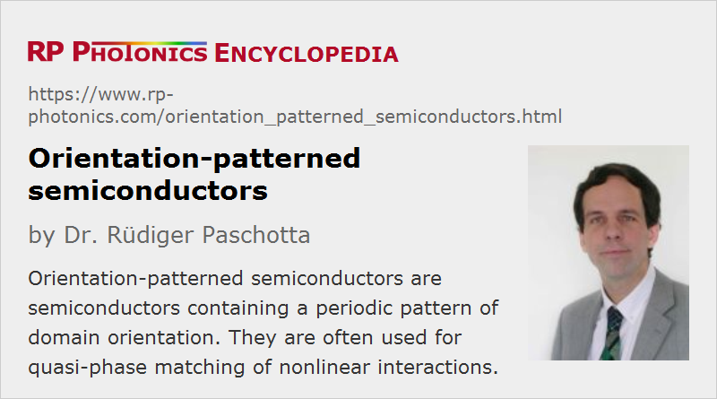

Orientation-patterned Semiconductors
Definition: semiconductors containing a periodic pattern of domain orientation
German: Halbleiter mit periodisch wechselnder Domänenorientierung
Categories: optical materials, nonlinear optics, methods
How to cite the article; suggest additional literature
Author: Dr. Rüdiger Paschotta
Traditional nonlinear crystal materials based on dielectrics can be used for wide range of nonlinear frequency conversion processes. However, there is a limited choice of such materials for long-wavelength infrared applications, because most of those materials exhibit too strong absorption in the mid-infrared region. Various semiconductors present interesting alternatives for such applications, as they are made of relatively heavy chemical elements and have a correspondingly shifted infrared absorption edge. (In dielectrics such as oxides and borates, multiphonon absorption strongly limits the infrared transmission range.) For example, gallium arsenide (GaAs) has a wide transparency range of about 0.9–17 μm. Semiconductors also tend to have very high nonlinear coefficients, which is obviously very beneficial, particularly for high-gain devices like optical parametric amplifiers and for difference frequency generation. For example, GaAs has a value of d14 = 94 pm/V around 4 μm, which is one to two orders of magnitude higher than for common nonlinear dielectrics. Another attractive feature is the often very high thermal conductivity, allowing the conversion of quite high optical powers without substantial heating, which could affect the phase matching.
However, it has often been impossible to achieve phase matching for the desired nonlinear conversion processes – at least with birefringent phase matching; for example, gallium arsenide is optically isotropic (concerning linear optics), exhibiting no birefringence. Quasi-phase matching (QPM) can be a solution for that, but traditional methods of periodic poling for obtaining periodically inverted structures are applicable only to ferroelectric materials and therefore not e.g. to semiconductors with a cubic lattice structure such as gallium arsenide (GaAs). Therefore, novel techniques had to be developed for obtaining a periodic pattern of domain orientation in such semiconductors. A common term for such a material is e.g. orientation-patterned gallium arsenide, in short OP-GaAs.
Orientation-patterning techniques have so far mostly been applied to gallium arsenide, which has quite favorable properties. However, some other semiconductor materials are also of interest, and have been applied with some success. For example, gallium phosphide (GaP), having a wider band gap than GaAs, has lower two-photon absorption in the convenient pumping range 1–1.7 μm; for comparison, efficient operation of OP-GaAs (in that respect similar to ZGP crystals) often requires longer-wavelength pump sources such as Tm:YAG lasers, Tm:Ho:YLF lasers or Tm-doped fiber lasers. Devices based on ZnSe and ZnTe have also been demonstrated [2].
Typical results achieved with domain-patterned semiconductor devices include the following processes and devices:
- difference frequency generation of mid- or far-infrared waves [5, 8], e.g. for applications in laser spectroscopy
- generation of terahertz radiation with optical rectification [11]
- optical parametric oscillators emitting very long-wavelength idler waves (e.g. >8 μm) [9, 14]
- optical parametric amplifiers for long-wavelength signals [13]
Stack-of-plate Method
An older method is the “stack-of-plate” method: several GaAs wafers with alternating crystal orientations are mechanically mounted or bonded to each other [1]. This technique allows for large apertures as required for high-energy applications, but not for small orientation periods (thus not for all desirable phase-matching applications) and not for easy mass production. Therefore, this technique could not find a wide range of applications in nonlinear optics.
Epitaxial Techniques
Another approach is epitaxial growth of patterned films on a suitable template [2, 6], serving as a pre-oriented substrate. The template itself may be fabricated with wafer stacking (see above), but that again limits the achievable poling period.
Far smaller periods can be realized with lithographic techniques. One of them [3] works as follows:
- It starts with the bonding of two carefully aligned wafers with inverted phase domains; the quality of the bonding can be improved with additional bonding layers grown with OMCVD. One of the wafers contains an edge stop layer, which allows one to remove all but a very think layer after bonding. This results in a GaAs wafer having a thin (few μm) domain-inverted layer on top.
- With optical lithography, one can then remove a periodic pattern of stripes of that think layer, resulting in an orientation-patterned template.
- This can then be used for subsequent growth of thick layers e.g. with HVPE.
A later developed all-epitaxial approach is based on GaAs/Ge/GaAs heteroepitaxy (polar-on-nonpolar epitaxy):
- One first grows with MBE a thin layer of GaAs with uniform domain orientation, which is slightly misoriented from the (100) orientation of the surface.
- Then one applies a regular pattern of thin germanium stripes (≈3 nm thickness) with optical lithography.
- Further growth of GaAs up to a thickness of e.g. 5 μm leads to antiphase domains on the Ge-covered regions. (Without the above mentioned misorientation of the substrate, antiphase domains would be obtained only with 50% probability.)
For growing samples to a substantial thickness, relatively fast growth techniques such as organometallic vapor phase epitaxy (OMVPE) or hydride vapor phase epitaxy (HVPE) or liquid phase epitaxy (LPE) are required. Molecular beam epitaxy (MBE), for example, would be far too slow; it suitable only for generating the thin patterned template.
The quality of the thick epitaxially grown material can be very high, as long as sufficiently precise vertical domain propagation can be maintained over the required thickness. (Growth conditions need to be optimized accordingly, e.g. via various growth parameters such as temperature.) The film thickness and hence the beam aperture is often limited to a few hundred microns, although some growth techniques have been optimized for obtaining even devices with a thickness of the order of 1 mm [12] as required for high-power devices. Such device thicknesses are possible even for domain periods of the order of 30 μm.
Epitaxial techniques can also be applied to waveguide structures, resulting in an intense interaction which is not limited by beam divergence. One can thus obtain relatively efficiency frequency conversion at low power levels. For waveguides, a large device thickness is usually not required.
Questions and Comments from Users
Here you can submit questions and comments. As far as they get accepted by the author, they will appear above this paragraph together with the author’s answer. The author will decide on acceptance based on certain criteria. Essentially, the issue must be of sufficiently broad interest.
Please do not enter personal data here; we would otherwise delete it soon. (See also our privacy declaration.) If you wish to receive personal feedback or consultancy from the author, please contact him e.g. via e-mail.
By submitting the information, you give your consent to the potential publication of your inputs on our website according to our rules. (If you later retract your consent, we will delete those inputs.) As your inputs are first reviewed by the author, they may be published with some delay.
Bibliography
| [1] | L. Gordon et al., “Diffusion-bonded stacked GaAs for quasiphase-matched second-harmonic generation of a carbon dioxide laser”, Electron. Lett. 29 (22), 1942 (1993), doi:10.1049/el:19931293 |
| [2] | M. J. Angell et al., “Growth of alternating <100>/<111>-oriented II-VI regions for quasi-phase-matched nonlinear optical devices on GaAs substrates”, Appl. Phys. Lett. 64, 3107 (1994), doi:10.1063/1.111362 |
| [3] | S. J. B. Yoo et al., “Quasi-phase-matched second-harmonic generation in AlGaAs waveguides with periodic domain inversion achieved by wafer-bonding”, Appl. Phys. Lett. 66 (25), 3410 (1995), doi:10.1063/1.113370 |
| [4] | S. J. B. Yoo et al., “Wavelength conversion by difference-frequency generation in AlGaAs waveguides with periodic domain inversion achieved by wafer bonding”, Appl. Phys. Lett. 68, 2609 (1996), doi:10.1063/1.116197 |
| [5] | D. Zheng et al., “16-μm infrared generation by difference-frequency mixing in diffusion-bonded-stacked GaAs”, Opt. Lett. 23 (13), 1010 (1998), doi:10.1364/OL.23.001010 |
| [6] | L. A. Eyres et al., “All-epitaxial fabrication of thick, orientation-patterned GaAs films for nonlinear optical frequency conversion”, Appl. Phys. Lett. 79 (7), 904 (2001), doi:10.1063/1.1389326 |
| [7] | T. Skauli et al., “Measurement of the nonlinear coefficient of orientation-patterned GaAs and demonstration of highly efficient second-harmonic generation”, Opt. Lett. 27 (8), 628 (2002), doi:10.1364/OL.27.000628 |
| [8] | O. Levi et al., “Difference frequency generation of 8-μm radiation in orientation patterned GaAs”, Opt. Lett. 27 (23), 2091 (2002), doi:10.1364/OL.27.002091 |
| [9] | K. L. Vodopyanov et al., “Optical parametric oscillation in quasi-phase-matched GaAs”, Opt. Lett. 29 (16), 1912 (2004), doi:10.1364/OL.29.001912 |
| [10] | D. F. Bliss et al., “Epitaxial growth of thick GaAs on orientation-patterned wafers for nonlinear optical applications”, J. Cryst. Growth 287 (2), 673-678 (2006), doi:10.1016/j.jcrysgro.2005.10.140 |
| [11] | K. L. Vodopyanov et al., “Terahertz-wave generation in quasi-phase-matched GaAs”, Appl. Phys. Lett. 89 (14), 141119 (2006), doi:10.1063/1.2357551 |
| [12] | C. Lynch et al., “Growth of mm-thick orientation-patterned GaAs for IR and THz generation”, J. Crystal Growth 310 (24), 5241 (2008), doi:10.1016/j.jcrysgro.2008.08.050 |
| [13] | G. Bloom et al., “Optical parametric amplification of a distributed-feedback quantum-cascade laser in orientation-patterned GaAs”, Opt. Lett. 35 (4), 505 (2010), doi:10.1364/OL.35.000505 |
| [14] | R. K. Feaver, R. D. Peterson and P. E. Powers, “Longwave-IR optical parametric oscillator in orientation-patterned GaAs pumped by a 2 μm Tm,Ho:YLF laser”, Opt. Express 21 (13), 16104 (2013), doi:10.1364/OE.21.016104 |
| [15] | V. Tassev et al, “Progress in orientation-patterned GaP for next-generation nonlinear optical devices”, Proc. SPIE 8604 (2013), doi:10.1117/12.2008057 |
| [16] | R. Demur et al., “High sensitivity narrowband wavelength mid-infrared detection at room temperature”, Opt. Lett. 42 (10), 2006 (2017), doi:10.1364/OL.42.002006 |
See also: quasi-phase matching, periodic poling, nonlinear crystal materials, nonlinear optics
and other articles in the categories optical materials, nonlinear optics, methods
|  |
If you like this page, please share the link with your friends and colleagues, e.g. via social media:
These sharing buttons are implemented in a privacy-friendly way!